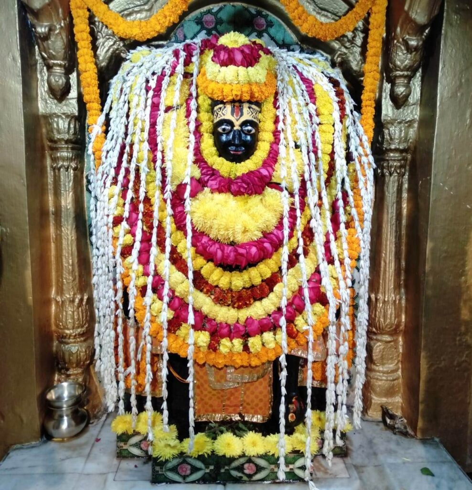

<?xml version="1.0" encoding="UTF-8"?><rss version="2.0"
	xmlns:content="http://purl.org/rss/1.0/modules/content/"
	xmlns:wfw="http://wellformedweb.org/CommentAPI/"
	xmlns:dc="http://purl.org/dc/elements/1.1/"
	xmlns:atom="http://www.w3.org/2005/Atom"
	xmlns:sy="http://purl.org/rss/1.0/modules/syndication/"
	xmlns:slash="http://purl.org/rss/1.0/modules/slash/"
	>

<channel>
	<title>Adi Keshav &#8211; Varanasi Temples</title>
	<atom:link href="index.html" rel="self" type="application/rss+xml" />
	<link>../../../../index.html</link>
	<description>Temples of Varanasi as referred to in Kashi Khand</description>
	<lastBuildDate>Thu, 19 Jun 2025 05:16:46 +0000</lastBuildDate>
	<language>en-US</language>
	<sy:updatePeriod>hourly</sy:updatePeriod>
	<sy:updateFrequency>1</sy:updateFrequency>
	<generator>https://wordpress.org/?v=4.6.29</generator>
	<item>
		<title>ADI KESHAV</title>
		<link>../../../../vishnu-temples/adi-keshav/index.html</link>
		<pubDate>Tue, 11 May 2010 10:43:55 +0000</pubDate>
		<dc:creator><![CDATA[admin]]></dc:creator>
				<category><![CDATA[Adi Keshav]]></category>
		<category><![CDATA[Vishnu Temples]]></category>
		<category><![CDATA[adi]]></category>
		<category><![CDATA[adi keshav]]></category>
		<category><![CDATA[keshav]]></category>
		<category><![CDATA[moksha]]></category>
		<category><![CDATA[mukti]]></category>

		<guid isPermaLink="false">../../../../p=636.html</guid>
		<description><![CDATA[Kashi Khand, Chapter 69 mentions the various forms of Keshav  (Lord Vishnu) in Varanasi.  Lord Vishnu told Sage Bindu (details given under Bindu Madhav temple) that a devotee who worships him (Lord Vishnu) in the Lord’s form as Adi Keshav finds his sadness being cleansed away and will enjoy only happiness. By worshipping Adi Keshav [&#8230;]]]></description>
				<content:encoded><![CDATA[<p>Kashi Khand, Chapter 69 mentions the various forms of Keshav  (Lord Vishnu) in Varanasi.  Lord Vishnu told Sage Bindu (details given under Bindu Madhav temple) that a devotee who worships him (Lord Vishnu) in the Lord’s form as Adi Keshav finds his sadness being cleansed away and will enjoy only happiness.</p>
<p>By worshipping Adi Keshav the devotee attains Mukti. Adi Keshav has installed Sangameshwar Ling at Varuna Ganga confluence and the former grants Moksha to the devotees.</p>
<p>&nbsp;</p>
<p><strong>&#8212;&#8212;&#8212;&#8212;&#8212;&#8212;&#8212;&#8212;&#8212;&#8212;&#8212;&#8212;&#8212;&#8212;&#8212;&#8212;&#8212;&#8212;&#8212;&#8212;&#8212;&#8212;&#8212;&#8212;&#8212;&#8212;&#8212;&#8212;&#8212;&#8212;&#8212;&#8212;&#8212;&#8212;-</strong></p>
<p><strong> </strong></p>
<p><span style="text-decoration: underline;"><strong>Kashi Khand, Chapter 97, Shlok 15</strong></span></p>
<p><strong> </strong></p>
<p><strong>वेदेश्वरादुदीच्यां तु क्षेत्रज्ञश्चादिकेशव: </strong></p>
<p><strong>दृष्टं  त्रिभुवनं सर्वं तस्य संदर्षनाद्ध्रुवम्</strong></p>
<p>&nbsp;</p>
<p><strong>By worshipping Aadi Keshav, located in the north of Vedeshwar, the devotee derives the benefits of worshipping the three worlds</strong></p>
<p><strong> </strong></p>
<p><strong>&#8212;&#8212;&#8212;&#8212;&#8212;&#8212;&#8212;&#8212;&#8212;&#8212;&#8212;&#8212;&#8212;&#8212;&#8212;&#8212;&#8212;&#8212;&#8212;&#8212;&#8212;&#8212;&#8212;&#8212;&#8212;&#8212;&#8212;&#8212;&#8212;&#8212;&#8212;&#8212;&#8212;&#8212;&#8212;</strong></p>
<p></p>
<p style="text-align: center;"><strong>(ADI KESHAV)</strong></p>
<p>This entire area covering the temple is a Shakti Peet and any prayers will yield multiple benefits.  Also, as this temple falls under the area of confluence of two rivers viz. Ganga and Varuna (Ganga Varuna Sangamam), the temple acquires religious power.</p>
<p></p>
<h2 style="text-align: center;">(GANGA VARUNA SANGAM)</h2>
<h2>LOCATION OF ADI KESHAV</h2>
<p>Adi Keshav is located at A-37/51, Rajghat Fort. Devotees can travel upto this place by autorickshaw or cycle rickshaw or car.</p>
<p>&nbsp;</p>
<p>Location of Adi Keshav temple as per google maps is given below :</p>
<p><a href="https://www.google.com/maps/place/Adi+Keshav+Ghat/@25.3288669,83.0243932,15z/data=!3m1!4b1!4m6!3m5!1s0x398e2fc96ca9762f:0xd72c9629869ba96f!8m2!3d25.328868!4d83.0428259!16s%2Fg%2F11b6dy3165?entry=ttu&amp;g_ep=EgoyMDI1MDEyOS4xIKXMDSoASAFQAw%3D%3D">https://www.google.com/maps/place/Adi+Keshav+Ghat/@25.3288669,83.0243932,15z/data=!3m1!4b1!4m6!3m5!1s0x398e2fc96ca9762f:0xd72c9629869ba96f!8m2!3d25.328868!4d83.0428259!16s%2Fg%2F11b6dy3165?entry=ttu&amp;g_ep=EgoyMDI1MDEyOS4xIKXMDSoASAFQAw%3D%3D</a></p>
<p>&nbsp;</p>
<p>Please watch our YouTube vide on Adi Keshav at the following Link :</p>
<h3></h3>
<h3><a href="https://www.youtube.com/watch?v=PnHNANHdVFM&amp;t=17s">https://www.youtube.com/watch?v=PnHNANHdVFM&amp;t=17s</a></h3>
<h3></h3>
<h3>TYPES OF POOJA</h3>
<p>The place of worship is open from 06.00 a.m. to 12.00 Noon and from 04.00 p.m. to 10.00 p.m.  The timings may be flexible.</p>
<p><strong> </strong></p>
<p>&nbsp;</p>
]]></content:encoded>
			</item>
	</channel>
</rss>
